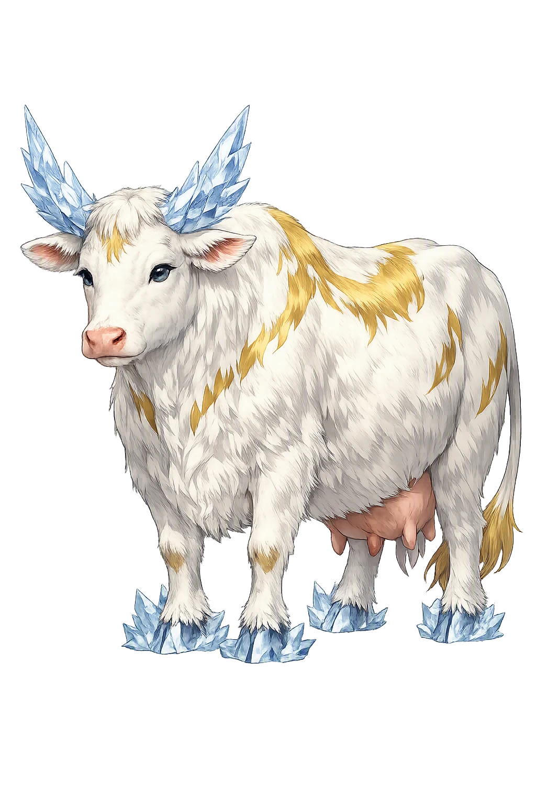
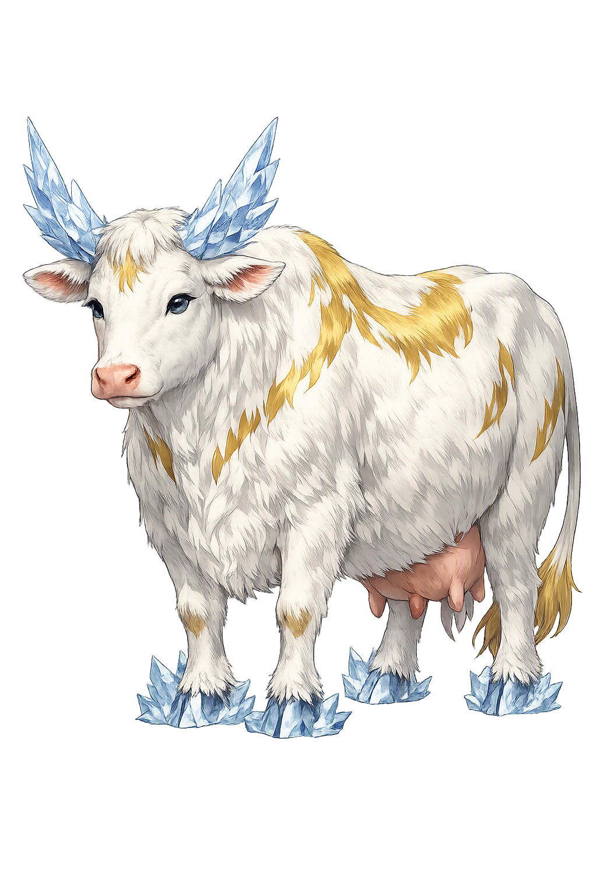

The Authentic Orthography
Primeval Cow, Nourisher of Creation · Wealth-humla (primeval cow)

Unicode restoration and ASCII comparison
ᛅᚢᚦᚢᛘᛚᛅ
The name in its original Norse form. Auðhumla (ᛅᚢᚦᚢᛘᛚᛅ) is attested in the source tradition — “Wealth-humla (primeval cow)”. Its original diacritics and script distinctions carry the full phonetic and orthographic weight of the source tradition.
audhumla
Reduced to plain audhumla, the name loses everything that made it specific: original diacritics and script distinctions. What remains is an ASCII string that machines can parse but that no longer speaks with its original voice.
Auðhumla
The Unicode restoration recovers what ASCII flattened. Auðhumla restores original diacritics and script distinctions, returning the name to its original written dignity. The domain encodes to Punycode, but the browser displays the truth.
Auðhumla.com → xn--auhumla-xza.com
The non-ASCII characters in Auðhumla are encoded while the ASCII remains visible. To the DNS, it is Punycode. To humanity, it is Auðhumla.
How Auðhumla travels from ancient script to the modern URL
Owned, ideal, and ASCII forms of Auðhumla
Auðhumla
Restores ᛅᚢᚦᚢᛘᛚᛅ. The live temple domain — auðhumla.com.
audhumla
Flattens ᛅᚢᚦᚢᛘᛚᛅ. The plain ASCII fallback — what DNS and legacy systems see.
How Auðhumla was spoken
Auðhumla is the first being with a body of plenty in the Norse cosmos. While the frost giant Ymir feeds from her four streams of milk, she licks the salty rime-stones of Ginnungagap and frees Búri, the first of the gods. She is not a goddess in the usual sense but the living source from which the two lineages of the world — giant and god — draw their beginning.
From her udders flow four rivers of milk that nourish the primeval giant Ymir through the long winter of Ginnungagap.
On the first day she licks the rime, a man's hair appears; by the third day, Búri stands whole, tall, and beautiful.
She exists in the gap between Niflheim's ice and Múspell's fire, where the first life takes shape from melting rime.
Her name means "wealth-humla"; she is the cow whose body is the first feast, feeding giant-kind while releasing god-kind.
Stories of Auðhumla
Auðhumla has only one extended scene in Norse mythology, but it is the scene from which everything else follows.
Snorri tells how the rivers of Élivágar, flowing out of Niflheim, hardened into ice in Ginnungagap. When the heat of Múspell met that ice, it melted and dripped; from the drips came Ymir, the first frost giant. A second dripping formed the cow Auðhumla. She fed Ymir with her milk, and she herself fed by licking the salty, hoar-frost-covered stones.
On the first day that Auðhumla licked the stones, a man's hair came forth by evening; on the second day, a head; on the third day, the whole man stood free. He was called Búri. He was tall and beautiful, and his son Borr married Bestla, daughter of the giant Bǫlþorn, and fathered Óðinn, Vili, and Vé. Every god of the Æsir descends, through Búri, from the cow's patient tongue.
Auðhumla stands at the branching point of the Norse cosmos. Ymir, fed by her milk, begets the race of frost giants; Búri, freed by her licking, begins the race of gods. The two enemies of Ragnarǫk share a common nurse — an image of cosmic kinship that the mythology never tries to resolve.
Auðhumla is patience made flesh. She does not speak, she does not fight, she does not scheme; she simply gives milk and licks stone. Out of that patient repetition the whole world arrives: the giant fed, the god freed, the genealogies that will end in fire. She is the first example of Norse wisdom — that power often looks like persistence.
Enter Extended Lore